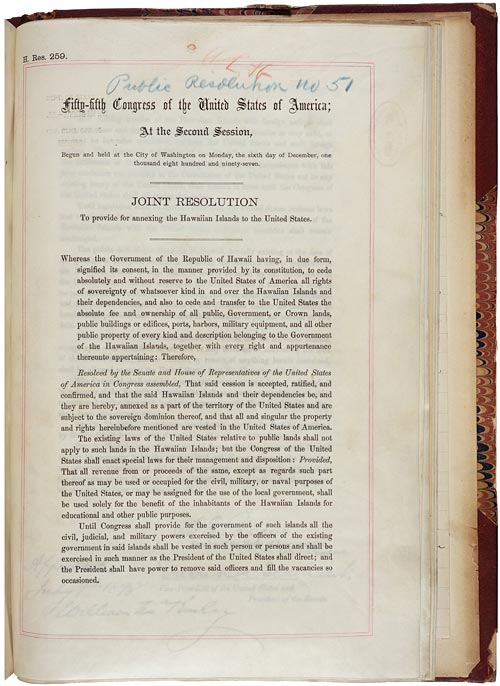

U.S. FOREIGN POLICY / WEEK 05
America becomes an overseas power
- 1898–1913
- Dr. Murat Toman
U.S. FOREIGN POLICY / WEEK 05
The main idea
- Around 1898, U.S. power expanded overseas. Hawai‘i, Cuba, and the Philippines experienced different forms of control, and people debated empire both abroad and at home.
- Canals, naval access, diplomacy, financial arrangements, and interventions expanded U.S. influence. These tools did not all work in the same way. Diplomatic agreement could advance a goal without immediate war, while the surrounding imbalance of power still mattered. The practical terms of an agreement reveal more than its friendly language.
U.S. FOREIGN POLICY / WEEK 05
Where this week fits in history
| When | Selected event |
|---|---|
| 1863 | Emancipation Proclamation |
| 1898 | War with Spain and overseas expansion |
| 1917 | U.S. entry into World War I |
U.S. FOREIGN POLICY / WEEK 05
History through a source

- This document is evidence of an official statement or decision. Its wording and appearance help us identify the source, but its promises still need to be checked against evidence of actions and results.
- Use the linked transcription or PDF to read the text. Ask who issued it, what it claims, and whose viewpoint is missing.
U.S. FOREIGN POLICY / WEEK 05
Key words explained
- Empire: A system in which a state exercises power over other territories or peoples.
- Colonial rule: Political control of a territory by an outside power.
U.S. FOREIGN POLICY / WEEK 05
Key words explained
- Intervention: Involvement in another country’s affairs, sometimes using force.
- Formal independence: Official status as a separate state, which may still face major external constraints.
U.S. FOREIGN POLICY / WEEK 05
Overseas expansion took several forms
- The war of 1898 and its aftermath extended U.S. power beyond the continent. Annexation, occupation, colonial rule, and limits on another state’s independence were different arrangements.
- They imposed different obligations and restrictions. Understanding empire requires examining the specific form of control in each place.
U.S. FOREIGN POLICY / WEEK 05
U.S. law gives a U.S. official perspective
- The resolution annexing Hawai‘i shows how the United States legally claimed authority. It does not establish that affected people consented or erase their own political history.
- A legal text is evidence of a government’s action and justification. Other sources are needed to understand opposition and consequences.
U.S. FOREIGN POLICY / WEEK 05
Cuba illustrates limited independence
- The Platt Amendment placed limits on Cuba’s freedom of action and provided for U.S. intervention under specified conditions. Cuba’s formal independence therefore existed alongside substantial external restrictions.
- A country can retain its own government while another power constrains important decisions. Control does not always require direct annexation.
U.S. FOREIGN POLICY / WEEK 05
Claims of improvement could accompany coercion
- U.S. leaders sometimes described rule or intervention as bringing education, health, or better government. The Philippine-American War shows how those claims could coexist with violence and resistance.
- Calling a policy helpful does not establish how affected people experienced it. Ask who defined improvement and who could refuse it.
U.S. FOREIGN POLICY / WEEK 05
A larger role required more than military force
- Canals, naval access, diplomacy, financial arrangements, and interventions expanded U.S. influence. These tools did not all work in the same way.
- Diplomatic agreement could advance a goal without immediate war, while the surrounding imbalance of power still mattered. The practical terms of an agreement reveal more than its friendly language.
U.S. FOREIGN POLICY / WEEK 05
Politics at home and abroad
- At home: Debates concerned race, citizenship, commercial interests, and whether empire fit republican principles.
- Abroad: The United States sought strategic positions, markets, and influence overseas.
- The connection: domestic support and resources affect what leaders can promise abroad. International events can change domestic priorities.
U.S. FOREIGN POLICY / WEEK 05
How power worked
| Form of influence | How it operated in this week |
|---|---|
| Hard power | War, occupation, and intervention rights limited other societies’ choices. |
| Soft power | Promises of progress and education sought acceptance, but attraction must be demonstrated rather than assumed. |
- Education under colonial rule is not automatically attraction; coercive context and recipient perceptions matter.
U.S. FOREIGN POLICY / WEEK 05
A worked explanation
- Does having an independent government guarantee freedom from outside control?
- No. Cuba shows how formal independence can coexist with restrictions and foreign intervention rights. The actual distribution of power matters.
- Why this matters: Canals, naval access, diplomacy, financial arrangements, and interventions expanded U.S. influence. These tools did not all work in the same way. Diplomatic agreement could advance a goal without immediate war, while the surrounding imbalance of power still mattered. The practical terms of an agreement reveal more than its friendly language.
U.S. FOREIGN POLICY / WEEK 05
Practice with the documents
- Find a power claimed in the Hawai‘i resolution.
- Find a restriction in the Platt Amendment.
- Describe the difference between annexing territory and limiting another country’s decisions.
U.S. FOREIGN POLICY / WEEK 05
How to support an answer
- A claim is what you argue. Evidence is a specific passage, event, or finding that supports it. Explain the connection between them.
- Example structure: “The document claims ____. This suggests ____. It cannot by itself show ____.”
- A speech can establish what a speaker said. Evidence of actions and consequences is needed to judge whether the policy worked.
U.S. FOREIGN POLICY / WEEK 05
What to remember
- Overseas expansion produced several distinct forms of rule and dependence.
- Official legal documents do not establish the consent of affected populations.
- Formal independence can coexist with substantial restrictions on sovereignty.
- Reform programs and colonial coercion could coexist; nonmilitary activity is not automatically soft power.
U.S. FOREIGN POLICY / WEEK 05
Reading guide
- Annexation of Hawai‘i Resolution (1898) A document from the period. Use it to identify what officials claimed or authorized, then check other evidence for the consequences. External source page; access may vary.
- Platt Amendment: 1903 treaty document A document from the period. Use it to identify what officials claimed or authorized, then check other evidence for the consequences. External source page; access may vary.
Annexation of Hawai‘i Resolution (1898) — External source page; access may vary.
Platt Amendment: 1903 treaty document — External source page; access may vary.
U.S. FOREIGN POLICY / WEEK 05
Reading guide
- The Philippine-American War, 1899–1902 A retired historical background essay. Use it for context, and compare its account with scholarship and other perspectives. External source page; access may vary.
- From Colony to Superpower: U.S. Foreign Relations since 1776 A scholarly narrative companion for historical periods. Select the relevant period; no unverified page assignments are supplied. Publisher record; full text may require institutional access.
The Philippine-American War, 1899–1902 — External source page; access may vary.
Office of the Historian Milestones: retired series, retained online for historical reference; not a current-policy source.
From Colony to Superpower: U.S. Foreign Relations since 1776 — Publisher record; full text may require institutional access.
U.S. FOREIGN POLICY / WEEK 05
Reading guide
- Soft Power A foundational theoretical reading, to be tested against historical cases rather than treated as a universal explanation. JSTOR article; full text may require institutional access.
Soft Power — JSTOR article; full text may require institutional access.
U.S. FOREIGN POLICY / WEEK 05
Video and audio guide
- Raising Old Glory over Morro Castle Analyze how early film framed the replacement of Spanish rule by American power.
- Jose Julio Henna & the Invasion of Puerto Rico Recover Puerto Rican political expectations surrounding the 1898 invasion.
Raising Old Glory over Morro Castle — Free provider page; external player may require consent or be region-dependent
Silent historical reenactment, explicitly cataloged as such; not unmediated battlefield footage.
Jose Julio Henna & the Invasion of Puerto Rico — Free provider page; external player may require consent or be region-dependent
Audio segment and transcript.
U.S. FOREIGN POLICY / WEEK 05
Using the sources carefully
- Linked readings and media offer particular viewpoints. Compare them with the lesson and other evidence. Some sources require institutional access.
- Media links and descriptions were checked when the course resources were prepared. Full playback was not tested.